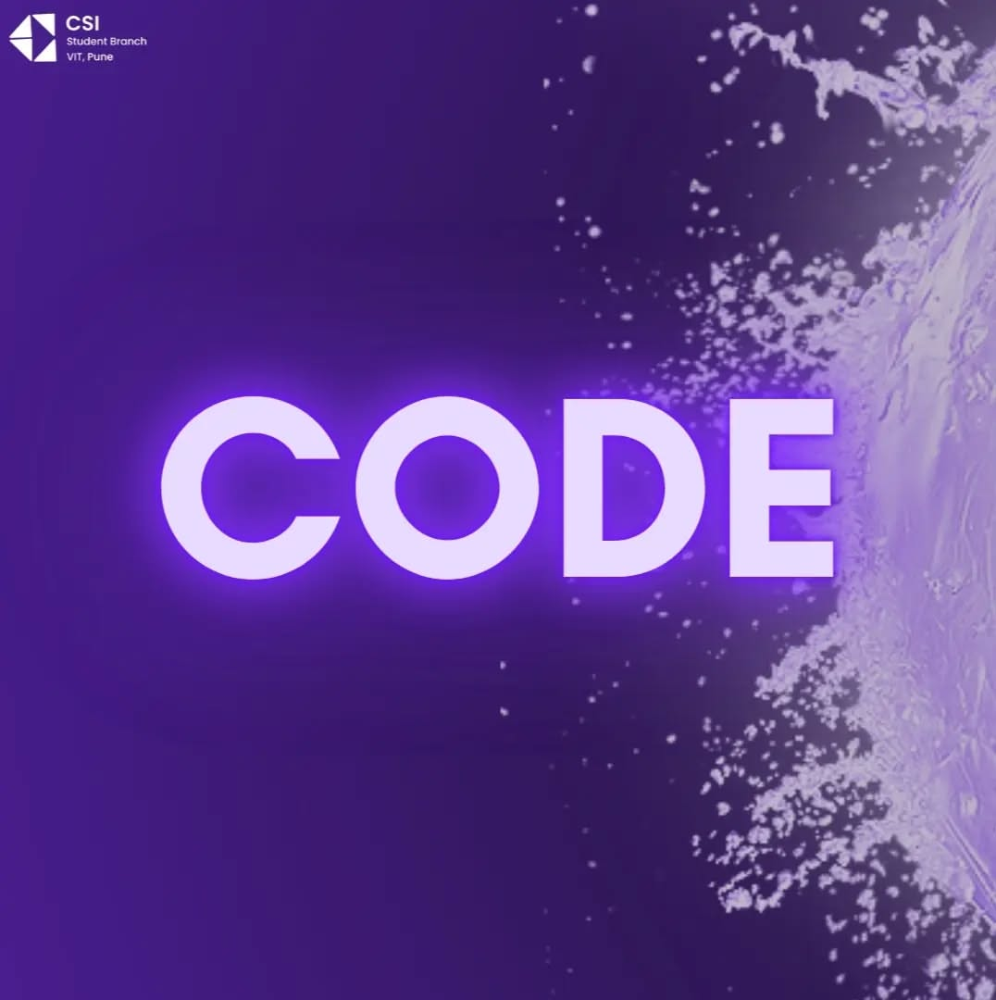
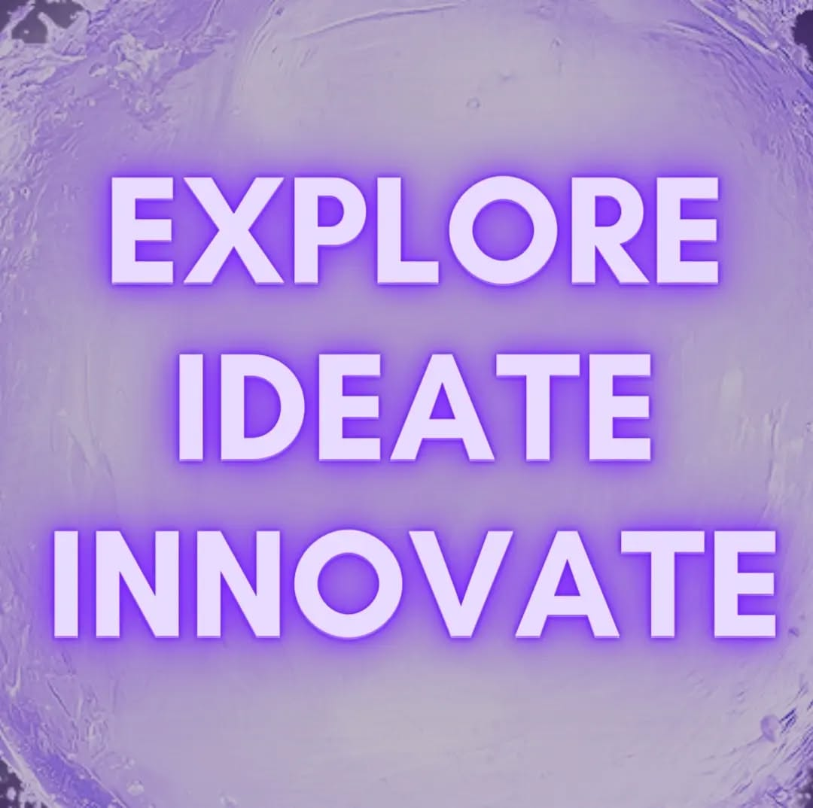

Welcome to the official website of the Computer Society of India, Student Branch, VIT Pune. We’re all about ideating, envisioning, debugging, and ultimately - building what matters!
The Computer Society of India (CSI) Student Chapter at Vishwakarma Institute of Technology (VIT), Pune, is a vibrant community dedicated to fostering technological innovation and skill development among students. As part of India's largest association of computer professionals, CSI VIT Pune engages in a variety of activities aimed at enhancing both technical and managerial competencies.
Mission and Objectives:
CSI VIT Pune strives to bridge the gap between academia and industry by:
Education and Training: Conducting workshops, seminars, and training programs to keep members updated with the latest technological advancements.
VIT University.
Research and Development: Encouraging innovative projects and research initiatives that contribute to the computing field.
Community Engagement: Providing platforms for networking, mentorship, and knowledge sharing among students and professionals.


Key Activities and Initiatives:
The chapter organizes a diverse range of events to cater to various interests:
Technical Workshops: Hands-on sessions on topics like open-source development, version control, and emerging technologies. For instance, the "Fork This" workshop introduces participants to open-source development, offering hands-on experience with Git and GitHub.
Hackathons: Competitive coding events such as "DevSpace," where participants tackle challenges across multiple tracks, including IoT, Fintech, and Sports Analytics.
Seminars and Guest Lectures: Sessions like "Byte Bistro" offer insights into the latest industry trends and innovations, featuring experienced professionals sharing their expertise.
Online Puzzle Hunts: Events like "Riddler" challenge participants with immersive themes and brain-bending riddles, fostering critical thinking and problem-solving skills.
Leadership and Team:
The chapter is led by a dedicated team of students committed to driving its mission forward. The leadership includes positions such as Chairperson, Vice Chair (Management), Vice Chair (Tech), General Secretary, and various heads overseeing domains like Management, Technical, Design, Projects, Finance, Research & Development, Editorial, and Marketing.